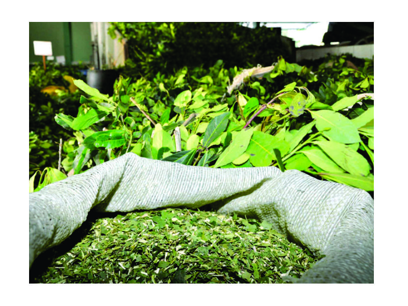
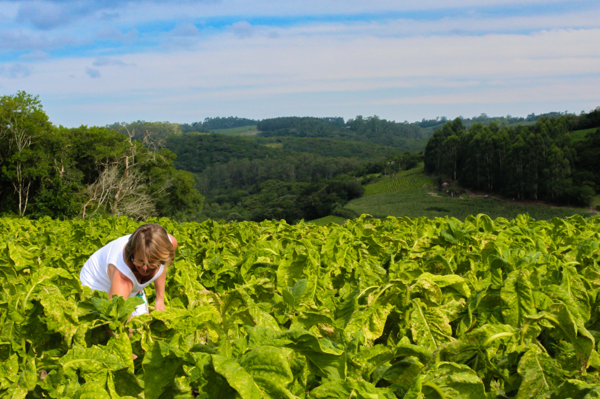

Maiores Producões em São Mateus do Sul

Erva Mate
A erva-mate está intimamente ligada à memória de São Mateus do Sul, que se tornou município em 1908, período de ouro da exploração do produto no Paraná. A planta nativa do Sul do País, já utilizada antes da colonização por indígenas guaranis, passou a ter grande saída pelo município, que funcionava como uma central de escoamento do produto através dos vapores que navegavam pela antiga hidrovia do Rio Iguaçu, que foi essencial para o sucesso do ciclo ervateiro paranaense. Atualmente, a cidade é a maior produtora de erva-mate do Brasil, status que também é compartilhado com o Paraná.

Fumo
A cidade de São João do Triunfo, cidade vizinha de São Mateus do Sul se consolida cada vez mais como uma referência estadual e nacional na produção de tabaco. Segundo o levantamento mais recente divulgado pela Associação dos Fumicultores do Brasil (Afubra), o município registrou uma colheita de 18,2 toneladas na safra 2020/2021. O desempenho coloca São João do Triunfo no topo do ranking estadual, ficando à frente de outras cidades dos Campos Gerais e Centro-sul,